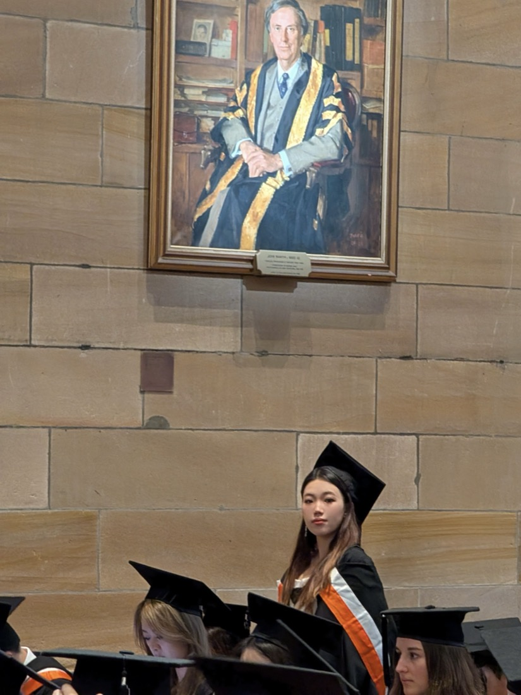

01 About
Yunzhi (Wendy) Zhang
I'm a policy researcher focused on AI governance and safety.
At the Cato Institute and the American Legislative Exchange Council, I've produced published analysis on AI regulation, the treatment of AI-generated content under the First Amendment, AI infrastructure and energy, and federalism in technology policy.

University of Sydney · 2024I'm completing an M.A. in Global Security Studies at Johns Hopkins University, with a concentration in Energy & Environmental Security, and I'm an incoming M.A. student in Computational Social Science at UC Berkeley. My work pairs rigorous policy research and writing with hands-on technical skill. I've built a 50-state, 10-year legislative database cited by scholars in Congressional and state testimony, produced a 27-state, 29-bill survey that informed model-policy advocacy and refinement on student device use, and run quantitative analysis in R and Python, alongside building with modern AI tools.
I co-founded ONE-AGI, a cross-campus AI organization spanning Johns Hopkins and UC Berkeley, where I lead discussions on AI safety, algorithmic fairness, and the societal impacts of AGI, and run hands-on workshops on LLM agents and AI prototyping.
I approach AI governance as an evidence-based, institutionally-grounded problem, how law, markets, and public institutions shape the technology, rather than a partisan one.
Education
University of California, Berkeley
M.A., Computational Social Science · 2026–2027 (expected)
Johns Hopkins University
M.A., Global Security Studies; Energy & Environmental Security · GPA 3.86 · 2024–2026
University of Sydney
B.A.; Major: History, Minor: Geography · 2021–2024
Skills
Research & analysis
Policy research, legislative & regulatory analysis, cross-state legislative tracking, stakeholder mapping, technical writing
Quantitative & technical
R, Python, quantitative & data analysis
Applied AI
LLM agents, AIGC, rapid prototyping
Languages
English (fluent), Mandarin (native), Japanese (introductory)
Get in touch
Let's talk.
Open to roles and collaboration in AI governance, safety, and policy.
wendyzhang20021111@gmail.com →